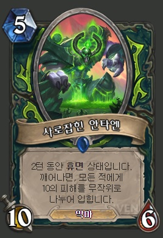

games
하스스톤
스카이림
하스스톤 - 무슨 아웃랜드 업데이트
안녕하세요.
하스스톤
이 업데이트 되었습니다.
악마사냥꾼
은 사기더군요. 하지만 사제는 더 사깁니다. 줄을 바꾸기 위해 엔터를 3번 쳐봤습니다.
근데 악마사냥꾼 카드 중 아주 인상깊은 놈이 있는데 사로잡힌 안타엔 이라는 카드입니다. 능력은 이렇습니다.
"2턴 동안 휴면 상태입니다. 깨어나면, 모든 적에게 10의 피해를 무작위로 나누어 입힙니다."
유리할 때 내면 상대는 정신 못차립니다.
